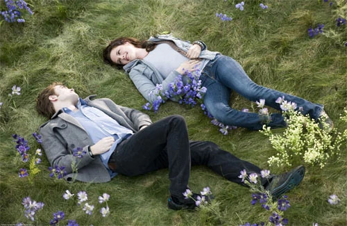
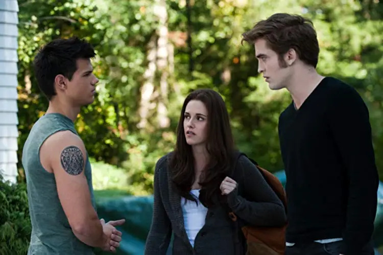

Plot Summary
Bella Swan has never quite fit in. Unlike the popular girls at her high school in Phoenix, Arizona, she’s always preferred to stay on the sidelines. When her mother remarries, Bella moves to the quiet, rainy town of Forks, Washington, to live with her father, expecting nothing out of the ordinary. But everything changes when she meets Edward Cullen—a mysterious, impossibly beautiful boy unlike anyone she’s ever known.
Edward is intelligent, charismatic, and seems to see straight into her soul. As their connection deepens, Bella discovers his secret: Edward is a vampire. He hasn’t aged since 1918, possesses superhuman strength and speed, and, unlike most of his kind, refuses to drink human blood. Despite the danger, they fall into a passionate and unconventional romance.
But their love comes at a cost. When a group of nomadic vampires arrives in town and discovers that Bella is human, Edward must fight to protect her from a deadly threat. In a modern retelling of forbidden love, Twilight weaves a tale of passion, danger, and the struggle between desire and self-control.
Reviews
Great start to the Twilight series
"I’ve never watched a vampire film before so this was quite new and exciting. It’s the first movie in the series and I think it was pretty good apart from the kissing which I’m not so keen on. My favourite character was Jessica because she was a good friend to Bella who had just started at a new school and a new life living with her father. Bella soon realises there is something fishy going on with some of her classmates. I’m excited to watch the next film in the series."
-Frankie
Twilight - A film to sink your teeth into!
"This is a film about a teenager, Bella, who moves from her mother and step father's house to go to live with her father in the small gloomy town of 3,120 inhabitants, not all of them human! From her first encounter with Edward Cullen, she was drawn to him and the film follows their relationship. When Bella first meets Edward in the Biology Class, there is a white owl with outstretched wings on the window sill behind Edward. When the camera faces Edward, it looks as if he has angel wings. Perhaps this is a sign that he will become Bella's guardian angel? He does in fact save her life three times in this film. The film uses a great deal of close up shots of Bella and Edward. These focus a lot on their eyes. Edwards's eyes change colour depending on his emotions and the focus on their eyes highlights their connection. The film uses a lot of distance shots, especially of natural surroundings. This is in contrast to the supernatural inhabitants of Forks. Also, the director has used shots of cameras panning in and out of trees during the forest scenes, giving the effect that someone is always watching. Sound and music varies in this film. For example, when Bella and Edward lay on the forest floor after Bella discovered that he was a vampire, the music was calm and tranquil with a piano playing an eerie tune over the melody. There were times when you could just hear nature, like rain drops or bird song. That demonstrates that their full attention is on one another. I agree with the 12 rating as the content is not suitable for younger children. I would recommend this film to teenagers."
-Anwen
Team Edward or Team Jacob?
It was the best of times, it was the worst of times. It was 2008 and the country was divided over one simple, yet inflammatory question: Are you Team Edward or are you Team Jacob?
Bella Swan (Kristen Stewart) was forced to confront a difficult romantic choice: the immortal, sparkling vampire Edward Cullen (Robert Pattinson) who was thirsty for her blood or Jacob Black (Taylor Lautner), a shapeshifter taking the form of a werewolf and family friend. The series' fans were quick and eager to sound off on who they thought Bella should end up with. If you had even so much as heard of "Twilight," you likely held a strong opinion on Team Edward or Team Jacob.
Well, as it turns out, those loyalties haven't gone anywhere.
Recently, as a part of the Great American Personality Test, INSIDER teamed up with Morning Consult to see what people had to say about the age-old question. Out of 8,805 respondents across the US, 22% of people said they are Team Edward and 18% said they are Team Jacob. Of the respondents, 60% of those polled said they didn't know or had no opinion.
It's no surprise that some respondents weren't sure what to choose: 30% of those polled were Gen Z or Millennials (ages 18-21 or 22-37, respectively). Whereas Gen X and Boomers (ages 38-53 and 54-72, respectively) accounted for 64% of respondents. The majority audience for "Twilight," it's safe to say, skews younger, as the books were released in 2005-2008 and were marketed as young adult novels.
But it's also not shocking that the margin between respondents who had an opinion was a slim 4%.
The debate may remain as contentious as ever, but one thing is certain: After all this time, Team Edward remains the right choice. Survey says. And so do the books, for that matter.